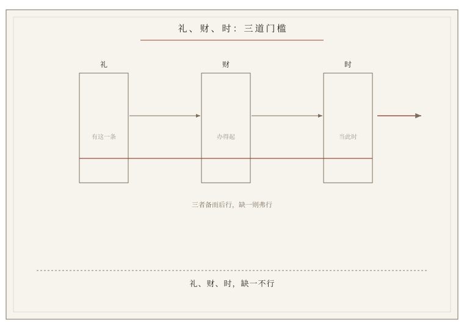

檀弓上 · 三·七十九 · 第 282 课
子思之母死於衛。柳若謂子思曰：「子，聖人之後也，四方於子乎觀禮，子蓋慎諸？」子思曰：「吾何慎哉？吾聞之：有其禮，無其財，君子弗行也；有其禮，有其財，無其時，君子弗行也。吾何慎哉？」
说什么事：子思的母亲死在卫国。柳若对子思说：你是圣人之后，四方之人都看着你学礼，你大概该慎重些吧。子思说：我有什么可慎重的？我听说：有礼而无财，君子不行；有礼有财而无其时，君子也不行。我有什么可慎重的？
落在哪一层：礼之条件。论「礼、财、时」三者备而后行。
为何编在此位：上节论礼之无文，此节论礼之有三个门槛。无文之处要从俗，有文之事也要看条件。两课皆在说「礼不是一条命令」。
【经】子思之母死於衛。柳若謂子思曰：「子，聖人之後也，四方於子乎觀禮，子蓋慎諸？」子思曰：「吾何慎哉？吾聞之：有其禮，無其財，君子弗行也；有其禮，有其財，無其時，君子弗行也。吾何慎哉？」
【注】子思，孔子孫，伯魚之子。伯魚卒，其妻嫁於衛。柳若，衛人也，見子思欲為嫁母服，恐其失禮，戒之。嫁母齊衰期。謂時可行，而財不足以備禮。謂財足以備禮，而時不得行者。時所止則止，時所行則行，無所疑也。喪之禮如子，贈襚之屬，不逾主人。
【疏】此一节论为出嫁母之丧行礼之事。案《孔子世家》，郑言之者，以下云「子，圣人之后」，故具言之。云「嫁母齐衰期」者，嫁母之服，《丧服》无文；案《丧服》杖期章云「父卒，继母嫁，从为之服报」，则亲母可知，故郑约云「齐衰期也」。又郑止言「齐衰期」，不言嫡庶，故谯周、袁准并云：「父卒，母嫁，非父所绝，嫡子虽主祭，犹宜服期。而《丧服》为出母期，嫁母与出母俱是绝族，故知与出母同也。」张逸问旧儒：「《世本》皆以孔子后数世皆一子，礼，適子为父后，为嫁母无服。《檀弓》说子思从于嫁母服，何？」郑答云：「子思哭嫂为位，必非適子，或者兄若早死，无继，故云数世皆一子。」「谓财至行者」，谓若嫁母之家主人贫乏，敛手足形还葬，己虽有财，不得过于主人，故下注「丧之礼如子，赠襚之属，不逾主人」是也。
子思 孔子之孙，伯鱼（鲤）之子，名伋。
柳若 卫人。注「见子思欲为嫁母服，恐其失礼，戒之」。
圣人之后 圣人的后代。
四方于子乎观礼 四方之人都要在你这里看礼。「于子乎」是倒装，即「于子观礼」。
盖慎诸 大概要慎重些吧。盖，疑辞；诸，「之乎」的合音。
吾何慎哉 我有什么可慎重的。重复两次，是答语的骨。
有其礼，无其财 礼有这一条，但财力不足。
无其时 没有那个时机。
嫁母齐衰期 母亲改嫁者，为她服齐衰一年。
赠襚不逾主人 赠送衣物之数不超过丧主（嫁母家的主人）。襚，赠死者衣物。
子思的母亲死在卫国。柳若对子思说：「你是圣人之后，四方之人都要在你这里看礼，你大概该慎重些吧？」子思说：「我有什么可慎重的？我听说：有那一条礼，却没有那份财，君子不行；有那一条礼，也有那份财，却没有那个时，君子也不行。我有什么可慎重的？」
此节的锋在两句同样的话上：「子盖慎诸」与「吾何慎哉」，一劝一答，隔着一个反问回来两次。
柳若的劝，理由极重：「子，圣人之后也，四方于子乎观礼。」——你的身份让你成了一个被看的对象。这是最不容易推掉的一种压力：不是命令，是期待。
子思的答，不接身份，只接条件。他给出三条：礼、财、时。三条之中，礼是「有没有这一条」，财是「办不办得起」，时是「当不当这个时候办」。三者备，行；缺一，弗行。
两个「吾何慎哉」之间，夹的是这三条。所以他不是不慎重，是慎重在别处：柳若慎的是「人看」，子思慎的是「条件」。
第一层 「观礼」这件事的两面 四方之人看你，是礼的传播，也是礼的负担。柳若看到的是负担：你一步走错，四方都学错。子思看到的是另一件事：若为了被看而行事，礼就成了表演。所以他把「看客」这一项从条件表里划掉了。
第二层 礼、财、时三者的次序 三者不是并列，是有次序的：先问有没有这一条礼（无礼则不必论财与时），再问有没有财，再问有没有时。这个次序本身就是一种节制：先正名，再量力，再择时。今人办事多加一个「有没有面子」，此节恰恰把它删了。
第三层 「无其时」最难解 财不足，人容易承认；时不当，最难判断。注说「谓财足以备礼，而时不得行者」，疏举一例：嫁母家的主人贫乏，只能「敛手足形还葬」，我虽有财，也不得超过主人——因为此时此地，主角不是我。这就是「时」。
礼的「时」，常常不是日历上的时间，而是「此刻该由谁做主」。
第四层 郑玄那一段考据的趣味 疏引张逸之问：《世本》说孔子之后数世皆一子，按礼，嫡子为父后，为嫁母无服；可《檀弓》却记子思为嫁母服，怎么解？郑玄答：「子思哭嫂为位，必非適子。」——他从另一条记载（子思哭嫂设位）推出子思不是嫡子，于是这条矛盾就解了。
这一答很见汉儒的方法：不是改经文，是用经文解经文。也可注意：礼制的适用，先要定「这个人是什么身份」。同一件事，嫡子与庶子的答案不同。
与今日何干 今人处在「被看着」的位置时最多——工作上、家族里、社交媒体上。「四方观礼」的压力，今人比子思更重。此节给的办法是把问题拆成三条可答的：有没有这一条，办不办得起，当不当此时。三条都能答，就不必问别人怎么看。
| 左 | 右 |
|---|---|
| 子，圣人之后也 | 柳若之劝 |
| 四方于子乎观礼 | 被看着的位置 |
| 子盖慎诸 | 一劝 |
| 吾何慎哉 | 一答，再答 |
| 有其礼，无其财 | 弗行 |
| 有其礼、有其财、无其时 | 弗行 |
| 礼、财、时 | 行之三门槛 |
| 赠襚不逾主人 | 「时」之一例 |
| 子思非適子 | 郑以哭嫂为位推之 |
画一间卫国的小院，视点平。院中一张素案，案上放着三样东西：一卷礼书（摊开）、一只空钱囊（瘪着）、一炷将尽的香（只剩短截）。院内一人（深衣、正面、双手垂立）立于案前；院门外站着数人（只见身影与足下，皆朝内看，不画面目）。案后一道矮墙，墙外的天光偏斜。不写文字。赭色只用在案上那炷将尽的香的香头，与空钱囊的束口。
